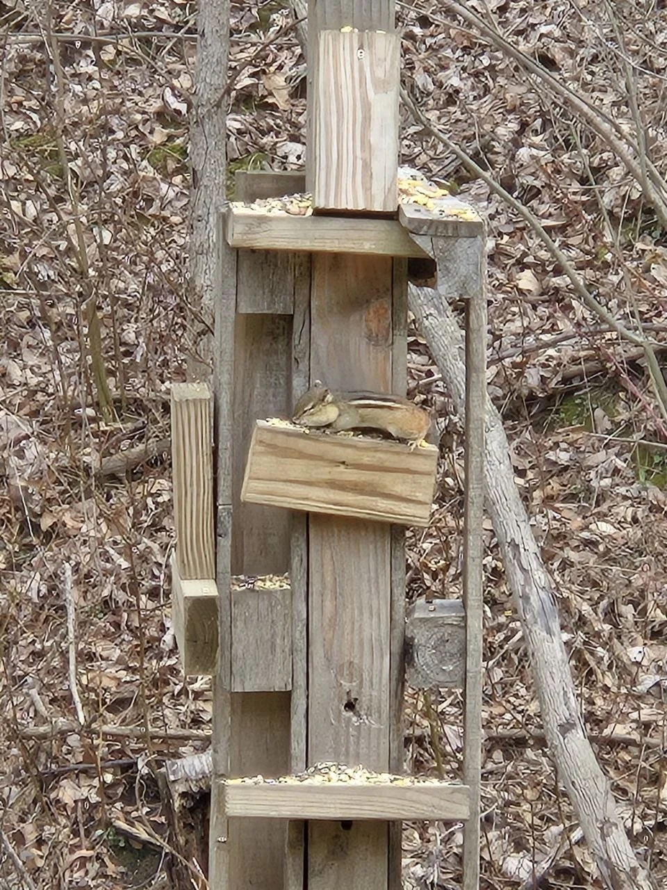
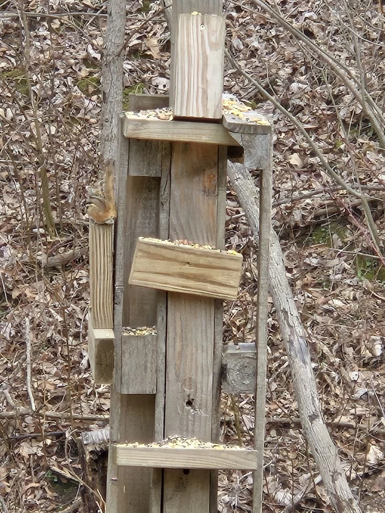
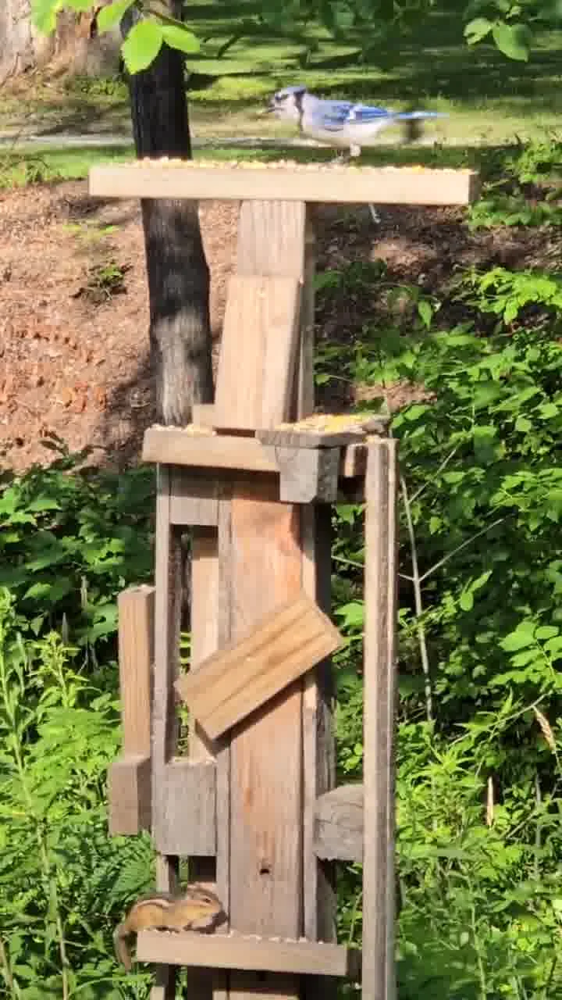

Start here
I had a woodpile where I was stacking wood, branches, and old lumber, and the chipmunks loved playing in it. When I had to move it, I honestly felt bad because it felt like I had taken away their little playground.
So I took some of that old lumber and built them a new place to climb, perch, snack, and play. It is simple, homemade, and a little rough around the edges, but that is part of the charm.

The full build

Full structure view
This gives the clearest look at the whole playground, with multiple ledges, a top platform, and lots of climbing spots built from old lumber.

Chipmunk action view
This is the fun part, seeing that the little critters actually use it the way you hoped they would.
Main hangout shot
A good close look at one of the little regulars enjoying the playground.

Chipmunk and blue jay moment
One of those fun little backyard moments that makes a homemade project feel alive.
What makes it work
- multiple little ledges for climbing and pausing
- a top platform for food and lookout duty
- old lumber and rough wood that give it a natural feel
- easy spots to scatter seed, corn, or little snacks
- a vertical layout that keeps it playful without taking up much space
Why I like this one
This is the kind of project that makes me smile because it came from paying attention. The chipmunks already told me what kind of space they liked. I just had to notice it, then build a new version from what I already had.
That is part of what Quiet Backyard Living is about too, not forcing nature into something complicated, just making little spaces that feel welcoming, useful, and fun.